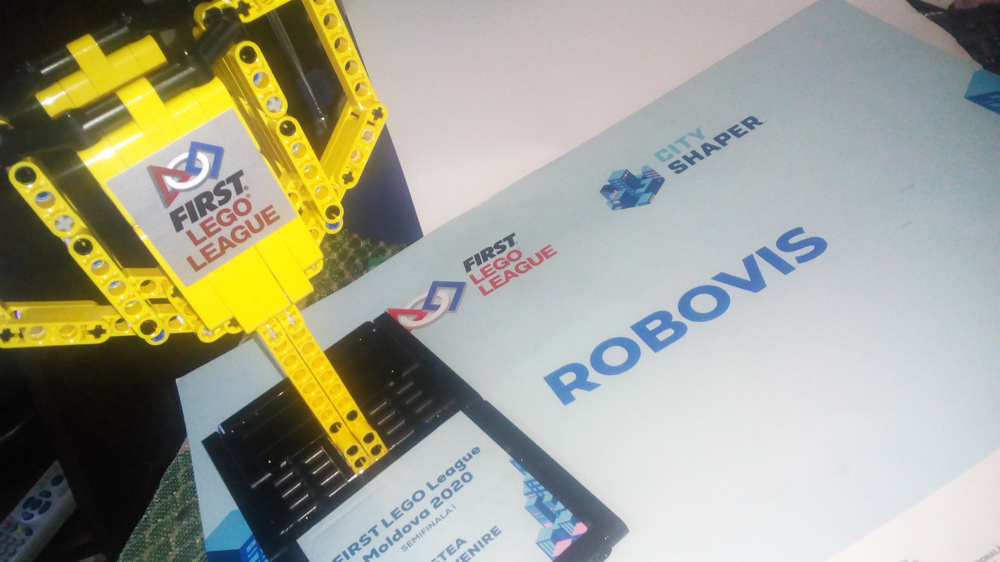

Despre Robotică
Robotica este știința care se ocupă cu tehnologia, proiectarea și fabricarea roboților. Robotica necesită cunoștințe de electronică, mecanică și programare, iar persoana care lucrează în acest domeniu a ajuns să fie cunoscută ca robotician. Denumirea de robot a fost introdusa pentru prima oara de către Karel Čapek în anul 1921 în lucrarea sa "Roboții universali ai lui Rossum", în 1921 plecând de la cuvântul ROBOTA, munca, activitate de rutina, preluat de către Isaac Asimov, în povestirea științifico-fantastică "Fuga în cerc" (1941).
Clasificarea roboticii
Robotica marina:
aceasta este o ramură în proces de expansiune datorită numeroaselor aplicații industriale, legate în principal de sectorul petrolier, sau științific, arheologic și militar.Robotica sociala:
își propune să dezvolte tehnologii care să facă roboții din ce în ce mai capabili să interacționeze și să comunice cu oamenii în mod independent.Robotica umanoidă:
se referă la dezvoltarea și construcția de roboți de tip uman.Robotica spațială:
se referă la aplicațiile și utilizarea roboților din afara atmosferei Pământului. În ciuda acestui fapt, acest sector al roboticii a avut repercusiuni și rezultate utile și în domenii care depășesc cercetarea spațială.